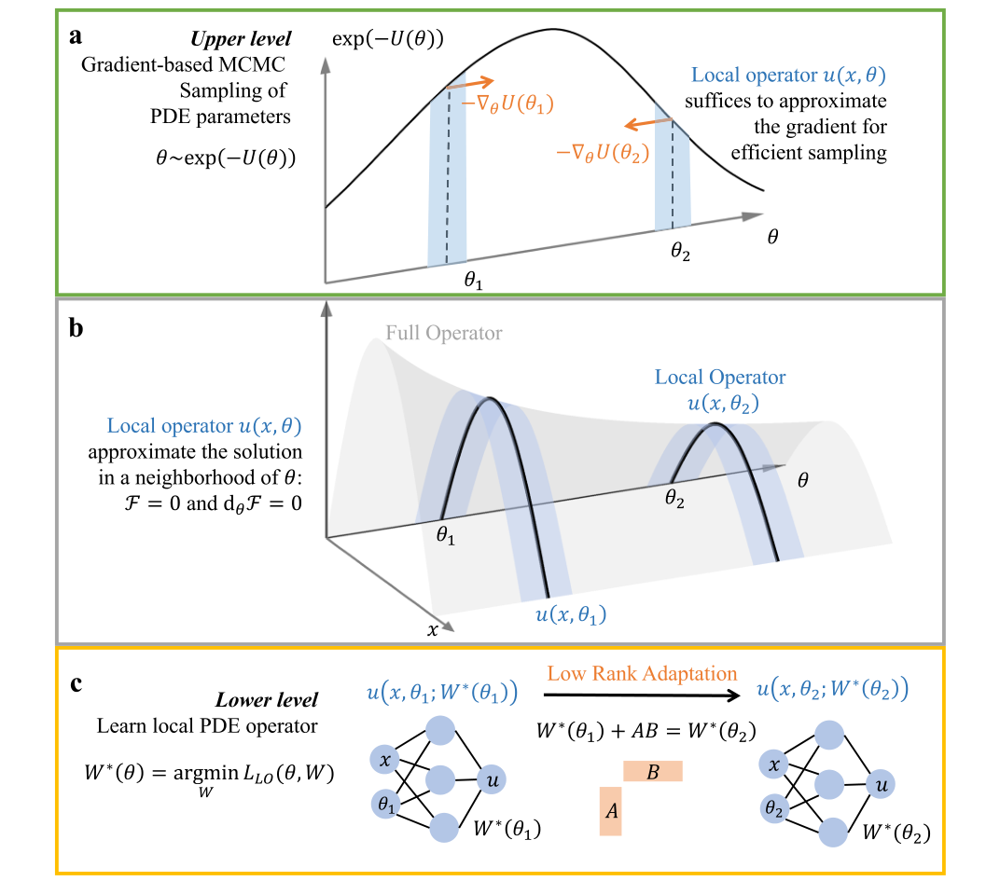
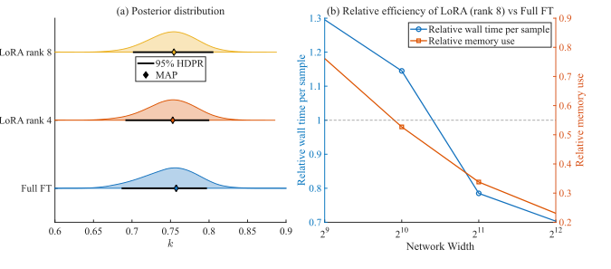

摘要解读
基于低秩适配的贝叶斯双层算子学习：偏微分方程反问题的高效不确定性量化
Bayesian bilevel operator learning with low-rank adaptation for efficient uncertainty quantification of PDE inverse problems
解读更新 2026-10-16 15:49 · 依据公开摘要整理，未核验全文细节
PDE逆问题不仅需要推断参数，还需要量化推断的不确定性。这项研究将后验采样与局部算子学习分层处理，探索如何降低贝叶斯推断的计算负担，同时关注近似求解对后验准确性的影响。
文章目录
参数推断之外，还要回答有多确定
偏微分方程（PDE）逆问题中的不确定性量化，是本文关注的核心。摘要将科学机器学习的价值概括为：在保留物理结构的同时，以数据驱动方式学习模型组成部分，并提供面向新兴成像技术与临床研究所需的可扩展性和适应性。这是研究背景，并不等同于本文已经验证了相应的临床效果。
上层采样参数，下层用LoRA学习局部算子
作者提出用于PDE贝叶斯推断的双层局部算子学习框架B-BiLO。上层通过哈密顿蒙特卡洛从参数后验分布中采样；下层通过低秩适配（LoRA）微调神经网络，对解算子进行局部近似。其关键分工是：参数采用概率采样，网络权重则通过确定性优化获得。
按摘要描述，这一框架无需合成数据或伴随方程，即可进行高效的梯度采样；同时，它避免了贝叶斯神经网络式的高维权重空间采样。作者还分析了下层近似优化产生的误差，以及这些误差对后验准确性的影响。
从参数后验到局部算子的双层分工


图解：图1｜BiLO与LoRA求解贝叶斯PDE逆问题的示意。a展示上层基于梯度的参数后验采样，横向为参数θ，曲线表示后验密度的未归一化形式，箭头表示局部梯度方向。b以空间位置x、参数θ及解值构成的曲面，对比灰色完整解算子与蓝色局部近似，并标示残差及其参数梯度的消失条件。c展示下层局部算子学习：以空间位置和参数为输入的神经网络，通过低秩矩阵乘积更新权重，在不同参数位置之间进行适配。
原文图注与出处
Fig. 1 | A schematic for solving the Bayesian PDE inverse problem using BiLO and LoRA. a At the upper level, we sample the PDE parameters θ from the posterior distribution using gradient-based MCMC. b The full operator u(x, θ) (gray surface) and its local approximation u(x, θ1) and u(x, θ2) (blue surface), which satisfies vanishing residual and residual-gradient conditions. The local operator suffices to
Zhang, Ray Zirui et al.
原文图页 · CC BY 4.0摘要报告准确且高效的不确定性量化
摘要报告，覆盖多种PDE模型、包括肿瘤生长模型的数值实验，展示了B-BiLO进行准确且高效不确定性量化的能力。这里能够确认的是作者报告的总体结论；摘要没有给出具体误差、运行时间或加速倍数，因此不宜将“高效”扩写成确定的性能提升幅度。
LoRA与全量微调的后验及计算成本比较


图解：图3｜不同LoRA秩与全量微调的准确性和效率比较。a以参数k为横轴，展示不同设置下的后验分布，菱形表示最大后验估计，横线表示最高密度后验区域。b以网络宽度为横轴，左轴表示相对单次采样耗时，右轴表示相对内存占用，对比图中所用LoRA设置与全量微调；随网络变宽，图示相对耗时和内存占用均下降。
原文图注与出处
Fig. 3 | Accuracy and efficiency of B-BiLO with LoRA of different ranks. a Comparison of the posterior distribution of k obtained by B-BiLO with LoRA of different ranks and Full FT. Diamond markers denote the MAP estimates, and bars indicate the 95% highest-density posterior region (HDPR). b Relative efficiency of
Zhang, Ray Zirui et al.
原文图页 · CC BY 4.0总体结论明确，比较与验证边界仍需细读
本解读以完整摘要为正文事实基础，并结合所附原图及原始图注说明方法与比较内容，不代表已经阅读全文。仅凭摘要，无法判断各项实验的数据规模、患者或案例数量、噪声设置、计算资源，以及准确性与效率指标的具体定义。
原图提供了不同LoRA秩与全量微调的比较，但不能据此认定某种设置在所有PDE问题中都更优。下层优化误差分析的成立条件，以及肿瘤生长案例的验证范围，也需要进一步阅读正文才能确认；这些属于当前资料不足以判断的内容，而非论文没有开展的工作。
阅读启发：局部近似能否支撑可信的后验
阅读启发：对于关注结构反问题与可靠性分析的读者，值得追问的是，局部解算子需要达到怎样的近似精度，才能支撑可信的参数后验？可优先细读误差分析条件，以及LoRA与全量微调的准确性—成本比较。摘要尚未报告结构生成式设计或可靠性优化验证，不应将这些方向写成已实现的应用。
以上为本站阅读启发与建议，不是论文已验证的结论。